7. Grafy¶
Terminológia
Graf je dátová štruktúra na reprezentovanie vzťahov medzi dvojicami objektov. Preto sa skladá
z množiny takýchto objektov - hovoríme im vrcholy: V = {V1, V2, …}
z množiny takýchto spojení (vzťahov medzi dvojicami), ktorým hovoríme hrany; množinu budeme označovať H, pričom každá hrana je dvojica (v, w), kde v, w
inVak sú to neusporiadané dvojice, hovoríme tomu neorientovaný graf
ak sú to usporiadané dvojice, hovoríme tomu orientovaný graf
Graf budeme znázorňovať takto:
vrcholy sú krúžky (podobne ako pri dátovej štruktúre strom)
hrany sú spojovníky medzi vrcholmi, pričom, ak je graf orientovaný, tak spojovníkmi sú šípky
Graf najčastejšie používame, keď potrebujeme vyjadriť takéto situácie:
mestá spojené cestami (najčastejšie je to neorientovaný graf: mestá sú vrcholy, hrany označujú cesty medzi mestami)
križovatky a ulice v meste (križovatky sú vrcholy, hrany sú ulice medzi križovatkami)
susediace štáty alebo nejaké oblasti (štáty sú vrcholy, hrany označujú, že nejaké štáty susedia)
mestská verejná doprava (zastávky sú vrcholy, hrany označujú, že existuje linka, ktorá má tieto dve susediace zastávky)
skupina ľudí, ktorí sa navzájom poznajú (ľudia sú vrcholy, hrany označujú, že nejaké konkrétne dve osoby sa poznajú)
Rôzne príklady využitia typu graf:
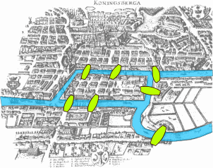
Problém siedmich mostov: medzi jednotlivými brehmi a ostrovmi mesta vedie sedem mostov. Otázkou je, či sa dá prejsť cez všetky mosty takým spôsobom, že sa dostaneme opäť do pôvodného miesta, bez toho aby sme nejaký most prešli viackrát. Leonhard Euler vyriešil tento problém v roku 1736.¶
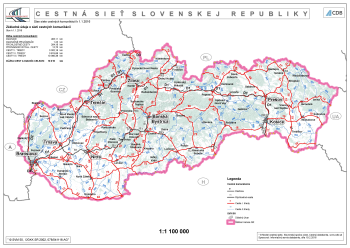
Cestná sieť SR (graf) obsahuje väčšie mestá (vrcholy grafu) a cesty rôznych farieb medzi nimi (hrany). Na hranách grafu sú zapísané vzdialenosti v kilometroch (váhy hrán).¶
Mapa (graf) liniek MHD Bratislavy. V tejto mape sú vrcholmi grafu zastávky a farby hrán vyjadrujú rôzne dopravné prostriedky. Na hranách sú zapísané čísla liniek (sú to váhy hrán).¶
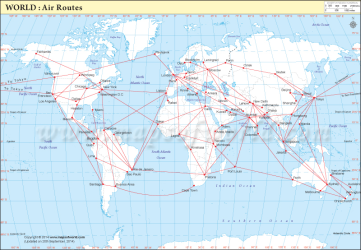
Mapa (graf) zobrazuje letecké trasy (hrany) medzi niektorými dôležitými mestami sveta (vrcholy).¶
Obrázok (graf) zobrazuje vzťahy (hrany) medzi členmi (vrcholmi) nejakej skupiny.¶
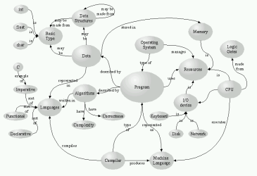
Toto je tzv. pojmová mapa. V tomto obrázku (grafe) sú v krúžkoch (vrcholoch) nejaké informatické pojmy. Niektoré z nich sú spojené šípkami (orientované hrany), ktoré vyjadrujú nejaký vzťah (váha hrany).¶
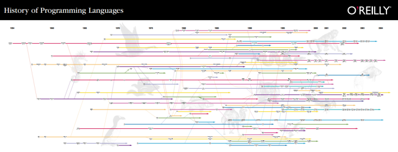
V tejto schéme sú mená najznámejších programovacích jazykov aj s rokmi, kedy vznikli (vrcholy grafu). Spojené sú šípkami (hrany grafu), ktoré vyjadrujú vzťah, ako ktorý jazyk ovplyvnil nejaký iný.¶
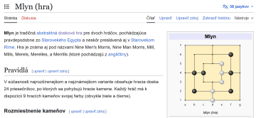
Mnohé doskové hry majú hraciu plochu v tvare nejakého grafu.¶
Dôležité pojmy
ak existuje hrana (v, w) - tak hovoríme, že v a w sú susediace vrcholy
v grafe môžeme mať uchované rôzne informácie:
v každom vrchole (podobne ako v strome), napríklad meno, súradnice v ploche (na mape), …
každá hrana môže mať nejakú hodnotu (tzv. váha), vtedy tomu hovoríme ohodnotený graf, napríklad vzdialenosť dvoch miest, cena cestovného lístka, linky, ktoré spájajú dve zastávky, vzťahy medzi pojmami, …
cesta je postupnosť vrcholov, ktoré sú spojené hranami
dĺžka cesty pre neohodnotený graf počet hrán na ceste, t.j. počet vrcholov cesty - 1
dĺžka cesty v ohodnotenom grafe je často súčet váh na hranách cesty (alebo iná operácia s váhami)
cyklus je taká cesta, pre ktorú prvý a posledný vrchol sú rovnaké
ak graf neobsahuje ani jeden cyklus, hovoríme že je acyklický
hovoríme, že graf je súvislý (spojitý), ak pre každé dva vrcholy v, w
inV, existuje cesta z v do w, inak je graf nesúvislýniekedy bude pre nás dôležité, keď nejaký graf bude súvislý/nesúvislý bez cyklov, ale aj súvislý/nesúvislý s cyklom
hrane (v, v) hovoríme slučka (toto bude veľmi zriedkavé, ak sa to niekedy objaví, upozorníme na to)
pojem komponent označuje súvislý podgraf, ktorý je disjunktný so zvyškom grafu (neexistuje hrana ku vrcholom vo zvyšku grafu)
Ďalej ukážeme najčastejšie spôsoby reprezentácie grafov. Konkrétna reprezentácia sa potom zvolí väčšinou podľa problémovej oblasti a rôznych obmedzení v zadaní.
Reprezentácie¶
Tento konkrétny graf postupne ukážeme v rôznych reprezentáciách
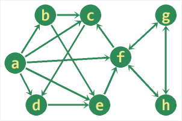
Na rozdiel od dátových štruktúr spájaný zoznam a binárny strom, pri ktorých sme si ukázali jednu reprezentáciu pomocou smerníkov (neskôr sme videli aj ďalšie), pri dátovej štruktúre graf si väčšinou zvolíte tú reprezentáciu, s ktorou sa vám pri tej ktorej konkrétnej úlohe najlepšie pracuje. Nižšie uvedieme niekoľko bežných reprezentácií, v ktorých sa využívajú pythonovské typy list, set a dict. Neskôr uvidíte aj iné spôsoby reprezentácie grafov.
Množina hrán¶
V tejto najjednoduchšej reprezentácii graf definujeme ako množina (mohol byť aj zoznam) hrán, t.j. dvojíc susediacich vrcholov:
a, b, c, d, e, f, g, h = 'abcdefgh'
graf = {(a, b), (a, c), (a, d), (a, e),
(a, f), (b, c), (b, e), (c, d),
(d, e), (e, f), (f, c), (f, g),
(f, h), (g, f), (g, h), (h, f),
(h, g)}
Všimnite si, že neorientované hrany sú tu zastúpené dvoma dvojicami, napríklad (g, h) a (h, g).
Pre túto štruktúru vieme zistiť, počet vrcholov, počet všetkých hrán, stupeň konkrétneho vrcholu a či medzi dvoma konkrétnymi vrcholmi je hrana:
>>> print('počet hrán:', len(graf))
počet hrán: 17
>>> print('susedia vrcholu "a":', {x for x in 'abcdefgh' if ('a', x) in graf})
susedia vrcholu 'a': {'f', 'd', 'b', 'e', 'c'}
>>> print('stupeň vrcholu f:', len({x for x in 'abcdefgh' if ('f', x) in graf}))
stupeň vrcholu f: 3
>>> print('hrana medzi b, e:', (b, e) in graf)
hrana medzi b, e: True
>>> print('hrana medzi c, a:', (c, a) in graf)
hrana medzi c, a: False
Zoznam množín susedností¶
Aby sme nemuseli pracovať s jednoznakovými reťazcami 'a', 'b', …, očíslujeme vrcholy číslami 0, 1, 2, …
Pre čitateľnosť zápisu najprv vytvoríme 8 konštánt a=0, b=1, c=2, … a pomocou nich zadefinujeme celý graf ako zoznam množín, kde i-ta množina reprezentuje všetkých susedov i-teho vrcholu:
a, b, c, d, e, f, g, h = range(8)
graf = [{b, c, d, e, f}, #a
{c, e}, #b
{d}, #c
{e}, #d
{f}, #e
{c, g, h}, #f
{f, h}, #g
{f, g}, #h
]
Pre túto štruktúru vieme zistiť, počet vrcholov, počet všetkých hrán, stupeň konkrétneho vrcholu a či medzi dvoma konkrétnymi vrcholmi je hrana:
>>> print('pocet vrcholov:', len(graf))
pocet vrcholov: 8
>>> print('pocet hran:', sum(map(len, graf)))
pocet hran: 17
>>> print('stupen vrcholu f:', len(graf[f]))
stupen vrcholu f: 3
>>> print('hrana medzi b, e:', e in graf[b])
hrana medzi b, e: True
>>> print('hrana medzi c, a:', a in graf[c])
hrana medzi c, a: False
Túto reprezentáciu môžeme „zabaliť“ do triedy napríklad takto:
class Graf:
def __init__(self, zoz=None):
if zoz is None:
self.zoz = []
else:
self.zoz = zoz
def pridaj_hranu(self, v1, v2):
while len(self.zoz)-1 < max(v1, v2):
self.zoz.append(set())
self.zoz[v1].add(v2)
def je_hrana(self, v1, v2):
return v2 in self.zoz[v1]
def daj_vrcholy(self):
return list(range(len(self.zoz)))
def daj_hrany(self):
return [(v1, v2) for v1 in range(len(self.zoz)) for v2 in self.zoz[v1]]
def stupen(self, v=None):
if v is not None:
return len(self.zoz[v])
return max(map(len, self.zoz))
def __str__(self):
return f'vrcholy: {self.daj_vrcholy()}\nhrany: {self.daj_hrany()}'
def __repr__(self):
return f'Graf({self.zoz})'
a graf môžeme teraz vytvoriť napríklad takto:
>>> a, b, c, d, e, f, g, h = range(8)
>>> graf = Graf()
>>> graf.pridaj_hranu(a, b)
>>> graf.pridaj_hranu(b, e)
>>> graf.pridaj_hranu(f, h)
>>> graf.pridaj_hranu(g, f)
>>> graf
Graf([{1}, {4}, set(), set(), set(), {7}, {5}, set()])
>>> print(graf)
vrcholy: [0, 1, 2, 3, 4, 5, 6, 7]
hrany: [(0, 1), (1, 4), (5, 7), (6, 5)]
Všimnite si, že sme vyrobili dve rôzne metódy __repr__() a __str__(). Metóda __repr__() sa zavolá, napríklad keď v dialógovom režime zapíšeme >>> graf. Metóda __str__() sa zavolá, napríklad keď budeme graf vypisovať príkazom print(). Metóda daj_hrany() využíva generátorovú notáciu:
return [(v1, v2) for v1 in range(len(self.zoz)) for v2 in self.zoz[v1]]
Metóda generuje všetky dvojice vrcholov, ktoré tvoria hrany. To isté môžeme zapísať aj takto:
return [(v1, v2) for v1, sus in enumerate(self.zoz) for v2 in sus]
Pre takto definovanú triedu Graf je trochu komplikované vytvoriť izolovaný vrchol, t.j. taký, z ktorého nevychádza (ani doň nevchádza) žiadna hrana (asi by pomohla metóda pridaj_vrchol()).
Ak máme pripravenú štruktúru grafu ako zoznam množín susedov, vieme z nej priamo vytvoriť inštanciu triedy Graf:
>>> a, b, c, d, e, f, g, h = range(8)
>>> gg = [{b, c, d, e, f}, {c, e}, {d}, {e}, {f}, {c, g, h}, {f, h}, {f, g}]
>>> graf = Graf(gg)
>>> print(graf)
vrcholy: [0, 1, 2, 3, 4, 5, 6, 7]
hrany: [(0, 1), (0, 2), (0, 3), (0, 4), (0, 5), (1, 2), (1, 4), (2, 3),
(3, 4), (4, 5), (5, 2), (5, 6), (5, 7), (6, 5), (6, 7), (7, 5), (7, 6)]
>>> graf.je_hrana(b, e)
True
>>> graf.je_hrana(c, a)
False
>>> print('stupen vrcholu f:', graf.stupen(f))
stupen vrcholu f: 3
V tejto reprezentácii grafu triedou Graf o samotnom vrchole nemáme žiadnu špeciálnu informáciu okrem jeho poradového čísla a prislúchajúcej množiny susedov.
Zadefinujeme novú triedu Graf, ktorá bude uchovávať zoznam vrcholov, t.j. zoznam objektov typu Vrchol:
class Graf:
class Vrchol:
def __init__(self, meno):
self.meno = meno
self.sus = set()
#-------
def __init__(self):
self.zoz = []
def pridaj_vrchol(self, meno): # vráti inštanciu Vrchol
for v in self.zoz:
if v.meno == meno:
return v # už existuje
novy = self.Vrchol(meno)
self.zoz.append(novy)
return novy
def hladaj_vrchol(self, meno): # vráti inštanciu Vrchol
for v in self.zoz:
if v.meno == meno:
return v
return None
def pridaj_hranu(self, v1, v2):
self.pridaj_vrchol(v1).sus.add(v2)
def je_hrana(self, v1, v2):
return v2 in self.hladaj_vrchol(v1).sus
def daj_vrcholy(self):
return [v.meno for v in self.zoz]
def daj_hrany(self):
return [(v1.meno, v2) for v1 in self.zoz for v2 in v1.sus]
def stupen(self, v=None):
if v is not None:
return len(self.hladaj_vrchol(v).sus)
return max(len(v.sus) for v in self.zoz)
def __str__(self):
return f'vrcholy: {self.daj_vrcholy()}\nhrany: {self.daj_hrany()}'
S vrcholmi teraz musíme pracovať prostredníctvom ich mien. V nasledovnom príklade to budú jednoznakové reťazce, teda:
>>> graf = Graf()
>>> for v1, v2 in 'ab ac ad ae af bc be cd de ef fc fg fh gf gh hf hg'.split():
graf.pridaj_hranu(v1, v2)
>>> print(graf)
vrcholy: ['a', 'b', 'c', 'd', 'e', 'f', 'g', 'h']
hrany: [('a', 'c'), ('a', 'b'), ('a', 'e'), ('a', 'd'), ('a', 'f'), ('b', 'c'),
('b', 'e'), ('c', 'd'), ('d', 'e'), ('e', 'f'), ('f', 'g'), ('f', 'c'), ('f', 'h'),
('g', 'h'), ('g', 'f'), ('h', 'g'), ('h', 'f')]
>>> print('stupen vrcholu f:', graf.stupen('f'))
stupen vrcholu f: 3
>>> print('stupen grafu:', graf.stupen())
stupen grafu: 5
>>> print('hrana medzi b, e:', graf.je_hrana('b', 'e')) # alebo graf.je_hrana(*'be')
hrana medzi b, e: True
>>> print('hrana medzi c, a:', graf.je_hrana('c', 'a'))
hrana medzi c, a: False
>>> print('pocet hran:', len(graf.daj_hrany()))
pocet hran: 17
Zrejme efektívnejšie by sa táto definícia realizovala nie zoznamom vrcholov (typ list), ale asociatívnym poľom (typ dict) vrcholov, v ktorom kľúčom by bol identifikátor vrcholu.
Asociatívne pole množín susedností¶
Pri realizácii reprezentácie množiny susedností pomocou tried Graf a Vrchol sa ukázalo nešikovné, keď sme mali všetky vrcholy (inštancie triedy Vrchol) uložené v zozname. Pri práci s takýmito vrcholmi sme museli veľakrát preliezať celý zoznam a hľadať vrchol s daným identifikátorom. Ak by sme namiesto toho použili asociatívne pole, výrazne by sa to zjednodušilo, napríklad
graf = {'a': set('bcdef'), # {'b','c','d','e','f'}
'b': set('ce'),
'c': set('d'),
'd': set('e'),
'e': set('f'),
'f': set('cgh'),
'g': set('fh'),
'h': set('fg'),
}
Zapíšeme to pomocou tried Graf a Vrchol:
class Graf:
class Vrchol:
def __init__(self, meno):
self.meno = meno
self.sus = set()
def pridaj_hranu(self, v2):
self.sus.add(v2)
def __contains__(self, v2):
return v2 in self.sus
#-------
def __init__(self):
self.zoz = {}
def pridaj_vrchol(self, meno):
if meno not in self.zoz:
self.zoz[meno] = self.Vrchol(meno)
def pridaj_hranu(self, v1, v2):
self.pridaj_vrchol(v1)
self.pridaj_vrchol(v2)
self.zoz[v1].pridaj_hranu(v2)
def je_hrana(self, v1, v2):
return v2 in self.zoz[v1]
def daj_vrcholy(self):
return list(self.zoz.keys())
def daj_hrany(self):
return [(v1, v2) for v1, v in self.zoz.items() for v2 in v.sus]
def stupen(self, v=None):
if v is not None:
return len(self.zoz[v].sus)
return max(len(v.sus) for v in self.zoz.values())
def __str__(self):
return f'vrcholy: {self.daj_vrcholy()}\nhrany: {self.daj_hrany()}'
Otestovať to môžeme rovnako ako sme testovali zoznam množín susedností:
graf = Graf()
for v1, v2 in 'ab ac ad ae af bc be cd de ef fc fg fh gf gh hf hg'.split():
graf.pridaj_hranu(v1, v2)
print(graf)
print('stupen vrcholu f:', graf.stupen('f'))
print('stupen grafu:', graf.stupen())
print('hrana medzi b, e:', graf.je_hrana('b', 'e'))
print('hrana medzi c, a:', graf.je_hrana('c', 'a'))
print('pocet hran:', len(graf.daj_hrany()))
a dostávame úplne rovnaké výsledky:
vrcholy: ['a', 'b', 'c', 'd', 'e', 'f', 'g', 'h']
hrany: [('a', 'e'), ('a', 'f'), ('a', 'c'), ('a', 'd'), ('a', 'b'),
('b', 'c'), ('b', 'e'), ('c', 'd'), ('d', 'e'), ('e', 'f'), ('f', 'g'),
('f', 'c'), ('f', 'h'), ('g', 'f'), ('g', 'h'), ('h', 'g'), ('h', 'f')]
stupen vrcholu f: 3
stupen grafu: 5
hrana medzi b, e: True
hrana medzi c, a: False
pocet hran: 17
Zoznam asociatívnych polí susedností¶
Ak máme, napríklad takýto ohodnotený graf:
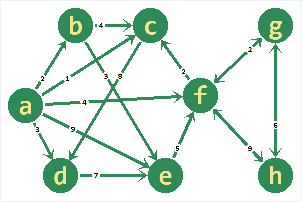
tak namiesto množiny susedností (prvá reprezentácia grafu) použijeme asociatívne pole (typ dict), v ktorom si pri každom susedovi budeme pamätať aj číslo na hrane, t.j. váhu:
a, b, c, d, e, f, g, h = range(8)
graf = [{b:2, c:1, d:3, e:9, f:4}, #a
{c:4, e:3}, #b
{d:8}, #c
{e:7}, #d
{f:5}, #e
{c:2, g:2, h:9}, #f
{f:2, h:6}, #g
{f:9, g:6}, #h
]
Mohli by sme tu využiť aj reprezentáciu asociatívne pole množín susedností, v ktorej by sme množiny opäť nahradili asociatívnymi poľami, napríklad
a, b, c, d, e, f, g, h = range(8)
graf = {a: {b:2, c:1, d:3, e:9, f:4},
b: {c:4, e:3},
c: {d:8},
d: {e:7},
e: {f:5},
f: {c:2, g:2, h:9},
g: {f:2, h:6},
h: {f:9, g:6},
}
Zrejme túto reprezentáciu by sme mali volať asociatívne pole asociatívnych polí susedností. Aj tu môžeme čísla vrcholov nahradiť reťazcami:
graf = {'a': {'b':2,'c':1,'d':3,'e':9,'f':4},
'b': {'c':4,'e':3},
'c': {'d':8},
'd': {'e':7},
'e': {'f':5},
'f': {'c':2,'g':2,'h':9},
'g': {'f':2,'h':6},
'h': {'f':9,'g':6},
}
Matica susedností¶
Graf zapíšeme do dvojrozmernej tabuľky (zoznam zoznamov) veľkosti n x n, kde n je počet vrcholov:
graf = [[0,1,1,1,1,1,0,0],
[0,0,1,0,1,0,0,0],
[0,0,0,1,0,0,0,0],
[0,0,0,0,1,0,0,0],
[0,0,0,0,0,1,0,0],
[0,0,1,0,0,0,1,1],
[0,0,0,0,0,1,0,1],
[0,0,0,0,0,1,1,0],
]
Často sa namiesto 0 a 1 píšu False a True.
Ukážme, ako sa zapisuje práca s takouto reprezentáciou:
>>> a, b, c, d, e, f, g, h = range(8)
>>> print('pocet vrcholov:', len(graf))
pocet vrcholov: 8
>>> print('pocet hran:', sum(map(sum,graf)))
pocet hran: 17
>>> print('stupen vrcholu f:', sum(graf[f]))
stupen vrcholu f: 3
>>> print('hrana medzi b, e:', graf[b][e]==1)
hrana medzi b, e: True
>>> print('hrana medzi c, a:', graf[c][a]==1)
hrana medzi c, a: False
Matica susedností s váhami¶
Namiesto 0 a 1 v dvojrozmernej tabuľke zapisujeme priamo váhy na príslušných hranách, pričom treba nejako označiť hodnotu, ktorá reprezentuje, že tu nie je hrana, napríklad
a, b, c, d, e, f, g, h = range(8)
_ = -1 # označuje, že tu nie je hrana, mohla tu byť aj hocijaká iná hodnota, napríklad None
graf = [[_,2,1,3,9,4,_,_],
[_,_,4,_,3,_,_,_],
[_,_,_,8,_,_,_,_],
[_,_,_,_,7,_,_,_],
[_,_,_,_,_,5,_,_],
[_,_,2,_,_,_,2,9],
[_,_,_,_,_,2,_,6],
[_,_,_,_,_,9,6,_],
]
Ukážme, ako sa zapisuje práca s takouto reprezentáciou:
>>> print('pocet vrcholov:', len(graf))
pocet vrcholov: 8
>>> print('pocet hran:', sum(x!=_ for r in graf for x in r))
pocet hran: 17
>>> print('stupen vrcholu f:', sum(x!=_ for x in graf[f]))
stupen vrcholu f: 3
>>> print('hrana medzi b,e:', graf[b][e]!=_)
hrana medzi b,e: True
>>> print('hrana medzi c,a:', graf[c][a]!=_)
hrana medzi c,a: False
>>> print('vaha na hrane medzi b,e:', graf[b][e])
vaha na hrane medzi b,e: 3
Cvičenie¶
Poznámka
riešenia úloh ulož do jedného súboru a odovzdaj na úlohový server https://vektor.fmph.uniba.sk/
testovací server tieto ulohy nebude testovať, vyrieš a odovzdaj ich všetky okrem tých, ktoré sú označené znakom -
prvé tri riadky súboru s riešením musia obsahovať:
# 7. cvicenie # student: Janko Hrasko # datum: 31.3.2026
zrejme ako študenta uvedieš svoje meno.
- Nakresli graf (na papieri), ktorý zodpovedá reprezentácii tabuľka susedností:
A
B
C
D
E
F
A
7
5
1
B
2
7
3
C
2
8
D
1
2
4
E
6
5
F
1
8
Koľko vrcholov a koľko hrán má tento graf?
{kind=link}
- Zapíš čísla vrcholov grafu na obrázku, ak poznáš jeho reprezentáciu:
graf = [{2, 3, 4}, {3, 4}, {0, 3, 4}, {0, 1, 2}, {0, 1, 2, 5}, {4}]
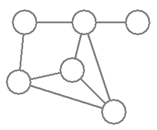
Potom odpovedz áno/nie:
je tento graf orientovaný?
je tento graf súvislý?
je tento graf ohodnotený?
je tento graf acyklický?
Riešenie
jedno z dvoch možných riešení:
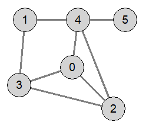
graf je neorientovaný, súvislý, neohodnotený, cyklický
{kind=link}
{kind=link}
Pre tento daný graf (ručne) zapíš množinu hrán:
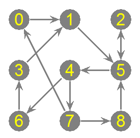
Odpovedz áno/nie:
je tento graf orientovaný?
je tento graf súvislý?
je tento graf ohodnotený?
je tento graf acyklický?
Potom
zapíš nejakú cestu (postupnosť vrcholov) z vrcholu 0 do vrcholu 3
nájdi všetky cykly, ktoré majú dĺžku aspoň 3 (hrany) a v ktorých sú všetky vrcholy rôzne (okrem prvého a posledného)
Riešenie
graf je orientovaný, súvislý, neohodnotený, cyklický
cesta z 0 do 3:
[0, 1, 5, 4, 6, 3]cykly:
[5, 4, 7, 8, 5],[5, 4, 7, 0, 1, 5],[3, 1, 5, 4, 6, 3]
{kind=link}
Zapíš graf z úlohy (3) v reprezentácii zoznam množín susedností:
graf = [...]
Potom aj v reprezentácii asociatívne pole množín susedností:
graf = {...}
Riešenie
# zoznam množín susedností graf = [{1}, {5}, {5}, {1}, {6, 7}, {4, 2}, {3}, {0, 8}, {5}] # asociatívne pole množín susedností graf = {0: {1}, 1: {5}, 2: {5}, 3: {1}, 4: {6, 7}, 5: {2, 4}, 6: {3}, 7: {0, 8}, 8: {5}}
Zapíš daný graf v reprezentácii asociatívne pole asociatívnych polí susedností:
graf = {...}
Riešenie
graf = {'A': {'B': 7, 'C': 5, 'F': 1}, 'B': {'A': 2, 'D': 7, 'E': 3}, 'C': {'B': 2, 'F': 8}, 'D': {'A': 1, 'E': 2, 'F': 4}, 'E': {'A': 6, 'D': 5}, 'F': {'B': 1, 'E': 8}}
Prepíš daný graf do reprezentácie matica susedností:
graf = [[...], ...]
Riešenie
graf = [[0, 0, 1, 1, 1, 0], [0, 0, 0, 1, 1, 0], [1, 0, 0, 1, 1, 0], [1, 1, 1, 0, 0, 0], [1, 1, 1, 0, 0, 1], [0, 0, 0, 0, 1, 0]]
Podľa vzoru triedy
Grafpre reprezentáciu zoznam množín susedností zapíš metódy pre reprezentáciu matica susedností:class Graf: def __init__(self, n): # n je počet vrcholov, t.j. veľkosť matice self.matica = [...] # zadefinuje prázdny graf (v matici sú samé 0) def pridaj_hranu(self, v1, v2): ... def je_hrana(self, v1, v2): return ... def daj_vrcholy(self): # vráti množinu čísel vrcholov return ... def daj_hrany(self): # vráti množinu usporiadaných dvojíc return ... def stupen(self, v1=None): # zistí stupeň vrcholu alebo celého grafu if v1 is not None: return ... return ... def __str__(self): return f'vrcholy: {self.daj_vrcholy()}\nhrany: {self.daj_hrany()}'
Riešenie
class Graf: def __init__(self, n): # n je počet vrcholov, t.j. veľkosť matice self.matica = [[0] * n for _ in range(n)] # zadefinuje prázdny graf (v matici sú samé 0) def pridaj_hranu(self, v1, v2): self.matica[v1][v2] = 1 def je_hrana(self, v1, v2): return self.matica[v1][v2] == 1 def daj_vrcholy(self): # vráti množinu čísel vrcholov return set(range(len(self.matica))) def daj_hrany(self): # vráti množinu usporiadaných dvojíc return {(i, j) for i in self.vrcholy() for j in self.vrcholy() if self.je_hrana(i, j)} def stupen(self, v1=None): # zistí stupeň vrcholu alebo celého grafu if v1 is not None: return sum(self.matica[v1]) return sum([sum(riadok) for riadok in self.matica]) def __str__(self): return f'vrcholy: {self.daj_vrcholy()}\nhrany: {self.daj_hrany()}'
Zadefinuj inštanciu triedy z úlohy (7) tak, aby zodpovedala grafu z úlohy (6). Napríklad:
graf = Graf(...) graf.pridaj_hranu(...) ... for i in graf.daj_vrcholy(): print('stupen vrcholu', i, 'je', graf.stupen(i))
Riešenie
graf = Graf(6) hrany = ((0, 2), (0, 3), (0, 4), (1, 3), (1, 4), (2, 0), (2, 3), (2, 4), (3, 0), (3, 1), (3, 2), (4, 0), (4, 1), (4, 2), (4, 5), (5, 4)) for i, j in hrany: graf.pridaj_hranu(i, j)
Do triedy
Grafz úlohy (7) dopíš tieto dve metódy a otestuj ich na grafe z úlohy (6):je_orientovany()zistí, či je graf orientovaný (vtedy vrátiTrue)trojuholniky()vypíše všetky také trojice vrcholov, ktoré sú navzájom spojené hranami oboma smermi každý s každým
class Graf: ... def je_orientovany(self): return ... def trojuholniky(self): print(...)
Riešenie
class Graf: ... def je_orientovany(self): hrany = self.daj_hrany() for i, j in hrany: if (j, i) not in hrany: return False return True def trojuholniky(self): hrany = self.daj_hrany() for i, j in hrany: if i < j and (j, i) in hrany: for k in self.daj_vrcholy(): if j < k and {(i, k), (k, i), (j, k), (k, j)} <= hrany: print(i, j, k)
Do triedy
Grafz prednášky, ktorá definuje reprezentáciu asociatívne pole množín susedností dodefinuj metódy na vykreslenie grafu:class Graf: canvas = None class Vrchol: def __init__(self, meno, x, y): self.meno = meno self.sus = set() self.x, self.y = x, y def kresli(self): # vykreslí vrchol ako kruh s textom self.meno ... #------- def __init__(self): # inicializácia triedy Graf self.graf = {} def pridaj_vrchol(self, meno, x, y): ... ... def kresli_hranu(self, meno1, meno2): # vykreslí hranu z meno1 do meno2 ... def kresli(self): # vykreslí celý graf ...
Kreslenie otestuj na grafe z úlohy (6).
Napríklad:
g = Graf() g.pridaj_vrchol(0, 130, 130) g.pridaj_vrchol(1, 50, 50) ... g.pridaj_hranu(0, 2) g.pridaj_hranu(0, 3) ... g.kresli()
Riešenie
import tkinter class Graf: class Vrchol: canvas = None def __init__(self, meno, x, y): self.meno = meno self.sus = set() self.xy = x, y def kresli(self): x, y = self.xy self.canvas.create_oval(x-10, y-10, x+10, y+10, fill='lightgray') self.canvas.create_text(x, y, text=self.meno) #---------------------------------------------- def __init__(self): self.vrcholy = {} self.canvas = tkinter.Canvas(bg='white', width=600, height=600) self.canvas.pack() self.Vrchol.canvas = self.canvas def pridaj_vrchol(self, meno, x, y): self.vrcholy[meno] = self.Vrchol(meno, x, y) def pridaj_hranu(self, meno1, meno2): self.vrcholy[meno1].sus.add(meno2) self.vrcholy[meno2].sus.add(meno1) def je_hrana(self, meno1, meno2): return meno2 in self.vrcholy[meno1].sus def kresli_hranu(self, meno1, meno2): xy1, xy2 = self.vrcholy[meno1].xy, self.vrcholy[meno2].xy self.canvas.create_line(xy1, xy2, width=3, fill='gray') def kresli(self): for meno1, vrchol in self.vrcholy.items(): for meno2 in vrchol.sus: self.kresli_hranu(meno1, meno2) for vrchol in self.vrcholy.values(): vrchol.kresli()
Otestujeme s grafom z (6) úlohy:
graf = Graf() graf.pridaj_vrchol(0, 130, 130) graf.pridaj_vrchol(1, 50, 50) graf.pridaj_vrchol(2, 200, 200) graf.pridaj_vrchol(3, 40, 160) graf.pridaj_vrchol(4, 140, 50) graf.pridaj_vrchol(5, 220, 50) for i, j in ((0, 2), (0, 3), (0, 4), (1, 3), (1, 4), (2, 3), (2, 4), (4, 5)): graf.pridaj_hranu(i, j) graf.kresli()
Do triedy z úlohy (10) doprogramuj inicializáciu
__init__()tak, aby sa popis grafu mohol prečítať z textového súboru:class Graf: ... #------- def __init__(self, meno_suboru=None): self.graf = {...}
Textový súbor by mohol mať napríklad takýto formát - každý riadok popisuje jeden vrchol:
meno x y zoznam_mien_susedov
Zadefinuj 2 súbory pre grafy z úloh (3) a (6) tak, aby sa výsledné obrázky čo najviac podobali, napríklad súbor pre graf z úlohy (6) môže začínať týmito dvoma riadkami:
0 130 130 2 3 4 1 50 50 3 4
Riešenie
class Graf: class Vrchol: ... #---------------------------------------------- def __init__(self, meno_suboru=None): self.vrcholy = {} if meno_suboru is not None: with open(meno_suboru, 'r') as txt: for riadok in txt.readlines(): meno, x, y, *sus = riadok.split() self.vrcholy[meno] = self.Vrchol(meno, int(x), int(y)) self.vrcholy[meno].sus = set(sus) self.canvas = tkinter.Canvas(bg='white', width=600, height=600) self.canvas.pack() self.Vrchol.canvas = self.canvas
Pre graf z úlohy (6) vytvoríme, napríklad takýto textový súbor:
0 130 130 2 3 4 1 50 50 3 4 2 200 200 0 3 4 3 40 160 0 1 2 4 140 50 0 1 2 5 5 220 50 4
a spustíme:
graf = Graf('graf5.txt') graf.kresli()
Ak by sme chceli pre graf z úlohy (3) kresliť aj šípky, môžeme opraviť metódy:
class Graf: ... def kresli_hranu(self, meno1, meno2, sipka=False): if sipka: r = 20 x1, y1, x2, y2 = *self.vrcholy[meno1].xy, *self.vrcholy[meno2].xy d = ((x1-x2)**2+(y1-y2)**2)**.5 xx, yy = (x2-x1)*r/d, (y2-y1)*r/d self.canvas.create_line(x1+xx, y1+yy, x2-xx, y2-yy, width=3, fill='gray', arrow='last', arrowshape=(10, 16, 5)) else: self.canvas.create_line(self.vrcholy[meno1].xy, self.vrcholy[meno2].xy, width=3, fill='gray') def kresli(self, sipka=False): for meno1, vrchol in self.vrcholy.items(): for meno2 in vrchol.sus: self.kresli_hranu(meno1, meno2, sipka) for vrchol in self.vrcholy.values(): vrchol.kresli()
Teraz môžeme vytvoriť, napríklad takýto textový súbor:
0 50 50 1 1 130 50 5 2 210 50 5 3 50 130 1 4 130 130 6 7 5 210 130 4 2 6 50 210 3 7 130 210 0 8 8 210 210 5
a po otestovaní:
graf = Graf('graf1.txt') graf.kresli(True)
dostaneme obrázok:
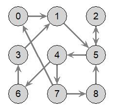
{kind=link}
7. Týždenný projekt¶
Poznámka
riešenie úlohy ulož do textového súboru s príponou
.pya odovzdaj na testovací server https://vektor.fmph.uniba.sk/prvé tri riadky súboru s riešením musia obsahovať:
# 7. tyzdenny projekt # student: Janko Hraško # datum: 19.4.2026
zrejme ako študenta uvedieš svoje meno, dátum uprav podľa dátumu odovzdania
nepoužívaj
import,globalani štandardné triediace funkcie
Vytvor dátovú štruktúru Graph, ktorá bude implementovať ohodnotený graf reprezentovaný ako množina hrán. Trieda Graph bude pracovať s jediným atribútom graph, ktorý bude typu množina trojíc, v ktorej je dvojica mien vrcholov a celočíselná váha. Keďže graf môže byť orientovaný, niektoré hrany môžu byť v tejto množine len jedným smerom. Ak je tam neorientovaná hrana, potom váha jedným aj opačným smerom je rovnaká. Keďže graf reprezentujeme iba množinou hrán, zrejme sa v takomto grafe objavia len vrcholy, ktoré majú aspoň jedného suseda, alebo majú aspoň jedného predchodcu (teda sú aspoň v jednej hrane).
V triede definuj ešte tieto metódy:
__init__s jedným parametrom - meno textového súboru; prečíta tento súbor a vytvorí z neho graf v reprezentácii množina hrán (do jediného atribútugraph)add_edges tromi parametrami (dve mená vrcholov a váha) pridá do grafu (do množiny hrán) ďalšiu hranuak má metóda viac parametrov ako tri, predpokladáme, že ich počet je násobkom troch a potom každá trojica (prvý, druhý a tretí; a štvrtý, piaty a šiesty, …) tvorí jednu hranu
napríklad, volanie
add_edge('a', 'b', 7, 'c', 'd', 0, 'e', 'f', -1)vytvorí tri hrany('a', 'b', 7), ('c', 'd', 0), ('e', 'f', -1)
adjacents dvomi parametrami (mená vrcholov) zisti, či je medzi nimi hrana (vráti príslušnú váhu aleboNone)ak má metóda ešte ďalší parameter (typu
bool), tak hodnotaTruetohto parametra bude označovať, že metóda zisťuje, či by medzi nimi bola hrana, keby bol graf neorientovanýnapríklad, ak je v grafe orientovaná hrana
('a', 'b', 7), takadjacent('b', 'a')vrátiNone, aleadjacent('b', 'a', True)vráti7
verticesvráti množinu mien vrcholovedgesvráti množinu trojíc mien vrcholov s váhamiak má metóda ešte aj jeden parameter (typu
bool), tak hodnotaTruetohto parametra bude označovať, že metóda vráti množinu hrán, ako keby bol graf neorientovaný (pre neorientovanú hranu si domyslí aj opačnú hranu)
is_undirectedzisti, či je graf neorientovaný (vráti logickú hodnotu)saveukladá celý graf do zadaného textového súboru, metóda má dva alebo tri parametreprvý parameter je celé číslo (od 1 do 3), ktoré vyjadruje typ formátu súboru
druhým parametrom je meno textového súboru
nepovinný tretí parameter je typu
boola jeho hodnotaTrueoznačuje, že zapíše tento graf akoby bol neorientovaný
V triede môžeš dodefinovať ďalšie pomocné metódy, ale nie ďalšie atribúty s hodnotami. Trieda dokáže pracovať s týmito tromi typmi súborov:
typ=1 označuje takýto tvar súboru:
súbor začína riadkom:
#1každý ďalší riadok popisuje jeden vrchol: meno vrcholu a zoznam mien jeho susedov aj s príslušnými váhami
každý riadok popisuje aspoň jednu dvojicu vrcholov aj s príslušnou váhou
každý vrchol, ktorému popisujeme zoznam susedov, sa v súbore vyskytne na prvom mieste len raz
riadky môžu nasledovať v ľubovoľnom poradí a aj zoznam mien susedov môže byť v ľubovoľnom poradí
meno vrcholu je ľubovoľný reťazec, ktorý neobsahuje medzeru, váha je celé číslo
napríklad:
#1 a b 7 c 5 d 4 e 6 f 2 b c 2 e 1 c d 0 d e 6 e f -1 f c 5 g 4 h 1 g f 4 h 2 h f 1 g 2
typ=2 označuje takýto tvar súboru:
súbor začína riadkom:
#2každý ďalší riadok popisuje jednu hranu ako trojicu mien vrcholov oddelených medzerou spolu s celočíselnou váhou
riadky môžu nasledovať v ľubovoľnom poradí
meno vrcholu je ľubovoľný reťazec, ktorý neobsahuje medzeru
napríklad:
#2 a c 5 a b 7 a e 6 a d 4 a f 2 b c 2 b e 1 c d 0 d e 6 e f -1 f g 4 f c 5 f h 1 g h 2 g f 4 h g 2 h f 1
typ=3 označuje takýto tvar súboru:
súbor začína riadkom:
#3ďalší riadok obsahuje zoznam mien všetkých vrcholov v nejakom poradí
všetky ďalšie riadky popisujú maticu susedností s váhami, pričom poradie vrcholov je dané prvým riadkom súboru
meno vrcholu je ľubovoľný reťazec, ktorý neobsahuje medzeru
ak dvojica vrcholov nie je spojená hranou, v matici je znak
'_'napríklad:
#3 a b c d e f g h _ 7 5 4 6 2 _ _ _ _ 2 _ 1 _ _ _ _ _ _ 0 _ _ _ _ _ _ _ _ 6 _ _ _ _ _ _ _ _ -1 _ _ _ _ 5 _ _ _ 4 1 _ _ _ _ _ 4 _ 2 _ _ _ _ _ 1 2 _
Graf sa inicializuje ľubovoľným z týchto formátov (rozpozná sa z prvého riadku súboru). Graf sa dokáže zapísať do súboru ľubovoľným z týchto formátov (metódou save). Všetky 3 ukážkové súbory vytvoria rovnaký graf.
Obmedzenia
riešenie odovzdaj v súbore, napríklad
riesenie.py, pričom sa v ňom bude nachádzať len jedna definícia triedyGraphatribút
graphv triedeGraphmusí obsahovať reprezentáciu grafu množinou hrán (typuset, pričom hrany sú trojice mien vrcholov s celočíselnou váhou, t.j.tuple); v triede nedefinuj žiadne ďalšie atribútyprogram by nemal počas testovania testovačom nič vypisovať (žiadne testovacie
print())testovač bude spúšťať definíciu triedy s rôznymi textovými súbormi
Môžeš si stiahnuť 2tp07.zip s testovacími súbormi 'subor1.txt', 'subor2.txt', 'subor3.txt', …, ktoré bude používať testovač.